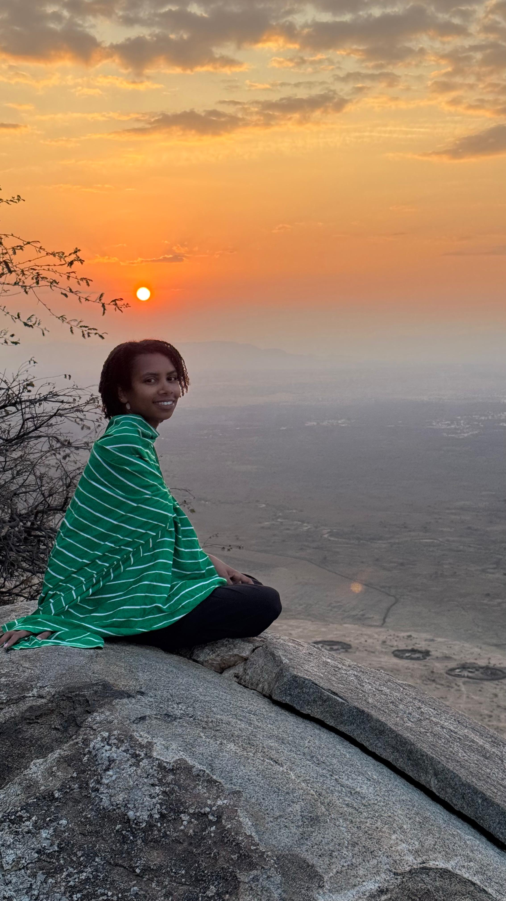

→ swap in your photo
(see code comments)
(see code comments)


Jahiya Clark is a conservation and forest ecologist pursuing a Ph.D. in Ecology and Evolutionary Biology at UC Santa Cruz, where she works in the Conservation Science and Stewardship Lab under Dr. Erika Zavaleta as a Doris Duke Fellow.
Her research spans climate adaptation science, land management and usage, natural history and collections, and remote sensing and GIS. Her master's research analyzed how adaptive forest management and climate change shape forest mammal occupancy across northern New England.
She is currently conducting a scoping review on the recorded ecological effects of Indigenous land tenure among Maasai, Chagga, Sonjo, Datoga, and Hadza peoples in Tanzania.
Jahiya is based in Santa Cruz, California.
full cv ↗